Chapter 5 Results
5.1 Deep Dive of School Type
5.1.1 Combination of School Type
Many schools have multiple types of grade based on our criteria in Chapter 3. For example, some schools may have both pre-school grade and elementary school grade, and combinations of middle school and high school are also common. Therefore, we construct another factor variable type_str to specify all types containing by a school.
The number of schools count by their complete type is distributed as follow:
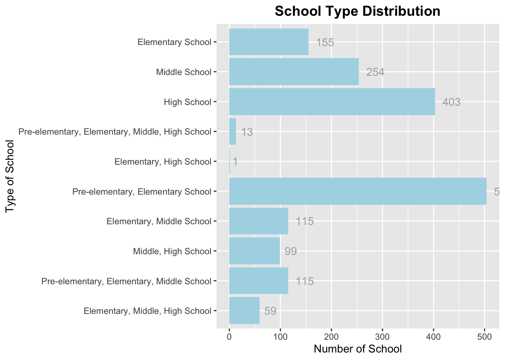
- Clearly, the dataset doesn’t include schools that only provide pre-school education or there may not be demographic schools in New York City provide only pre-school learning.
- Generally speaking, the combination of school type is based on chronological order of grades. As we can see, the largest quantity of schools have combinations of pre-school learning and elementary school learning part. But surprisingly, there exists a sample of schools with combinations of elementary part and high school part.
- The dataset also contains 13 sample of schools which cover from pre-learning to high school grade. We will consider it together with the next part when investigating special schools provided for students with disability.
5.1.2 Special School for Students with Disability
We use the metric of proportion of students with disability to determine whether a school can be considered as a speical school for students with disability.
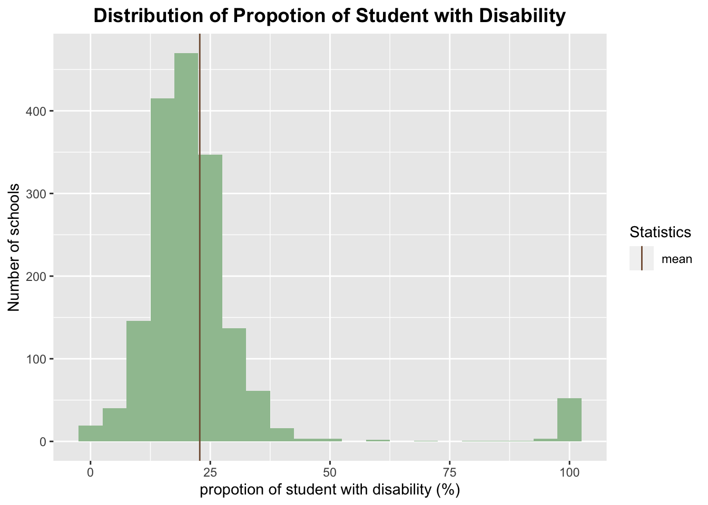
The histogram is right skewed, and with a peak around 100%. Most of demographic schools in New York City have less than 50% students with disability and the mean proportion is about 22%. Based on the distribution, we decide to set \(50%\) as a threshold to determine whether the school is a special school for students with disability. To explore more about this special type of schools, we focused on the grade type they provided inspired by the prior part.
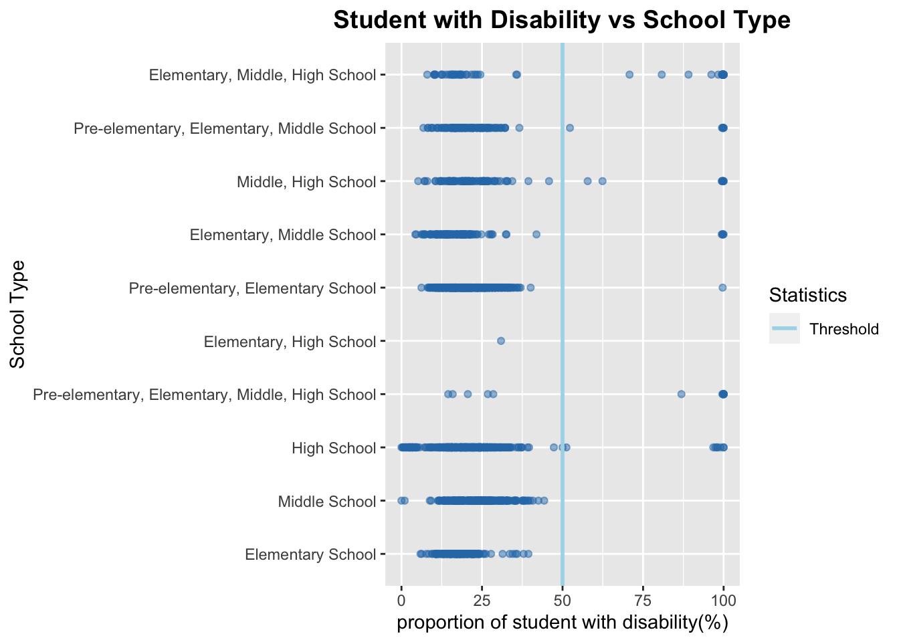
Remarks:
Types of special schools for student with disability are also various. No special elementary school and middle school exists in the dataset, which indicates students with disability in New York City at this stage can involved in normal education together with their peers.
The special school surely contributed more sample of schools with full range from pre learning to high school learning. From another perspective, they ensure the equity of achieving all stages of educations for students with disability.
5.2 Analysis of school enrollment
By Location: The distribution of school enrollment by location is shown below.
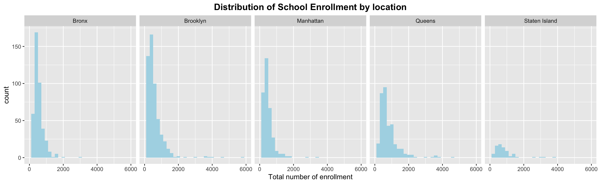
- Most of schools in New York City have the number of students varies under quantity of 2000. Outliers of “large” schools which have students more than 2000 are more often located in Brooklyn and Queens, given they both have larger area and populations compared with the other three boroughs.
By School Type: Since the type of number of grade a school includes can affect its student enrollment, we constructed boxplot to explore the enrollment of different type of schools.
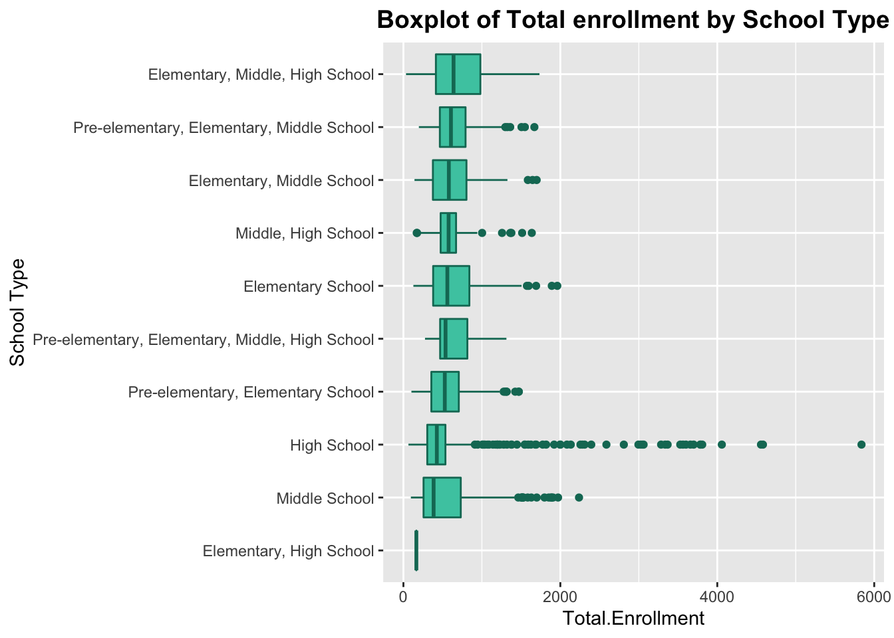
Apart from schools with coverage from pre-learning to high school learning(as stated before, most of them are special school for disability students), we can safely conclude that school with more grade level will have larger student enrollment in average. Therefore, schools provide elementary, middle school and high school level learning are generally have largest quantity of total enrollment since they includes 12 levels of grade.
Outlier exist in several types, but high school type consists largest amount of outliers, and also tends to have extremely large number of enrollment, expanding from 1000 students to almost 6000 students.
5.3 School Diversity in NYC
5.3.1 Race and Ethnicity
When it comes to diversity, race and ethnicity becomes the most popular topic. Here we use parallel coordinate plot to see whether there are correlations patterns in race group of public schools in New York City.
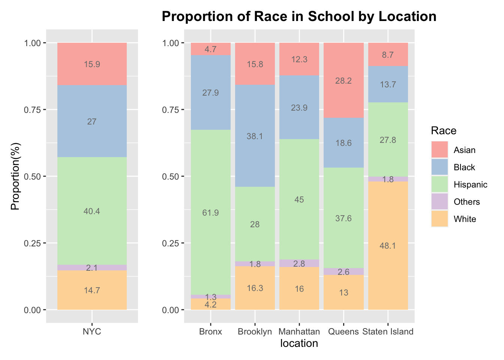
From the percentage bar plot above, we can get a complete view of Race diversity and also its relationship to the location.
In total, the percentage of Black and Hispanic students are overweighted than White students. According to NYC Race and Ethnicity data in 2021, more than 31.9 residents in NYC self-identified as white and non-Hispanic, while the majority of students in public schools are Hispanic and black.
Breakdown of locations give us more insights about race and ethnicity issue. The composition of different ethnic groups clearly depends on the school district where the observed school locates in. For example, the proportion of white students enrolled in Staten Island takes almost half of the enrollment, while in other Borough especially Bronx, white students only constitute 4.2% of the total enrollment. This location-dependent ethnicity distribution indicates potential factors, such as social economical discrepancies, that drives families to send their children to a specific school district for school. This disproportionate distribution of ethnicity groups in different districts could serve as a warning to officials about possible discrimination to the minorities in the school. Thus, local agencies and school representatives need to take precaution about potential racial discrimination.
Below we create a random sample of school to create a parallel coordinate plot. You can select, drag and reorder the columns to get a glimpse of race and ethnicity diversity in New York City public school.
Hint: Try to select sample with higher percentage of Black students, what’s the pattern considering other race group and location?
5.3.2 School Type and Ethnicity Composition
Given the location-dependent ethnicity distribution we discovered in the last section, we continued explore other indicators that may segregate different ethnic groups. The graph below shows the distribution of different ethnicity groups in different school types, where the school types were defined in a previous section.
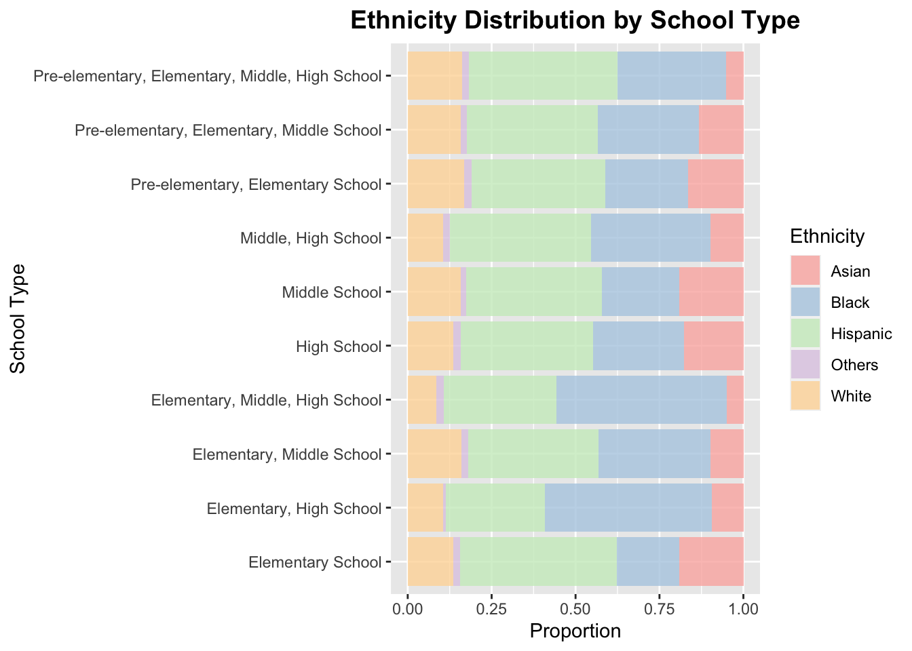 According to the stacked percentage barplot of ethnic group distribution in different school types, we can see high fluctuation of Asian and Black student proportions. Specifically, Black students have higher proportions in schools that are for Elementary, Middle, High Schools and Elementary, High schools, while lower proportions in schools that are identified as only Elementary schools. This difference in ethnicity distribution could indicate that discrepancy among students’ families’ social economical-status. School that are identified to contain multiple school types are usually public and can be subjected to higher chances of bullying, given the greater distribution of age groups.
5.3.3 Poverty Level
Poverty is another factor worth considering when talking about school diversity. We first tried to capture a top-down view of Poverty Level using histogram. If the students are random selected to be enrolled in demographic schools, the distribution of their poverty level will be nearly normal distributed.
Clearly, the distribution of proportion of poverty students are not normal distributed. By breakdown of location, most of distributions are right skewed except samples from Staten Island, and indicated that a majority of students in demographic schools are experiencing poverty.
5.3.4 English Language Learner
English-language learners, or ELLs, are students who are unable to communicate fluently or learn effectively in English, who often come from non-English-speaking homes and backgrounds, and who typically require specialized or modified instruction in both the English language and in their academic courses.
The number and proportion of English learner in public school reflects the diversity in Language and also can be a strong indication of race group and immigration living preference.
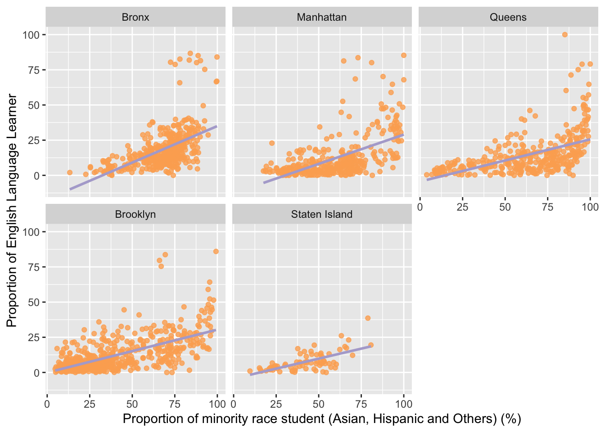
Using the proportion of minority race group vs proportion of English Language Learner, we construct scatter plot with facet of different locations. By definition and clearly in plots, these two factors are positive correlated. Moreover, the sample size and the coefficient of correlation in Staten Island are both the smallest, which may indicate a minority of immigrants in this borough.
5.4 Correlation Hypothesis and Analysis
As projected in Chapter 2, we proposed several relationships which can be further investigated through our dataset. In this section, we are going to look at the relationship between factors which affects school diversity given from different perspectives.
5.4.1 Poverty Rate and School Population
Firstly, we care about the single influencer of Poverty level in public schools. Considering the size of school enrollment and poverty rate, we construct scatter plot to see whether there exists patterns, like larger school with high poverty level or vice versa.
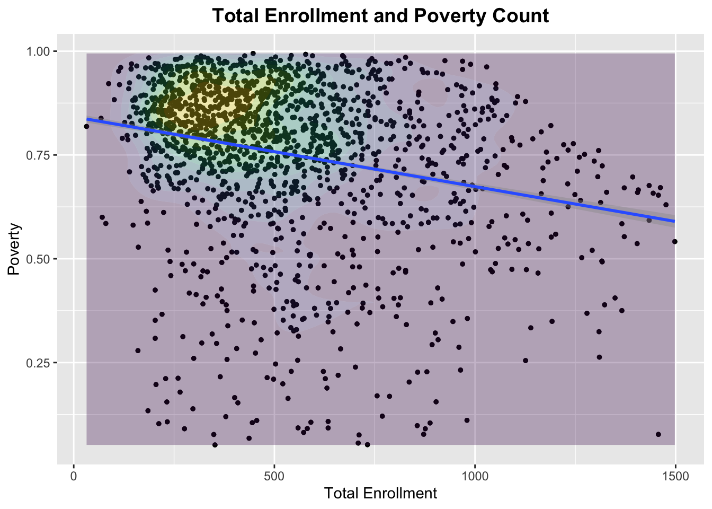
As the scatter plot shown, while the variance of sample from public schools are large, it is still possible to see the negative relationship between school size and poverty rate.Most of the public schools in NYC has an enrollment around 250-750 with a poverty ratre higher than 75%.
Outliers exist in every dimensions, but there appears to be a straight line border with a negative slope above the collection of points in the plot when total enrollment is larger than 1000.
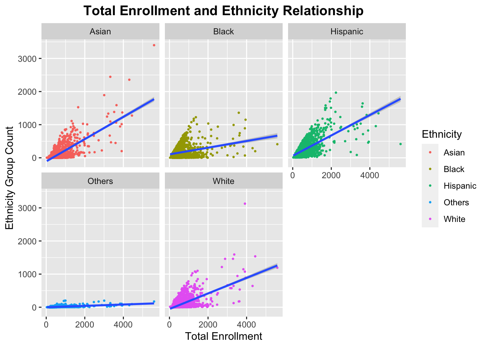
5.4.2 Three-way Interaction: Race Composition, Total Enrollment, Poverty
As we hypothesized, ethnic composition may have strong relations with the proportion of students in poverty since the minority ethnic groups are more likely to be immigrants and has lower economics income.
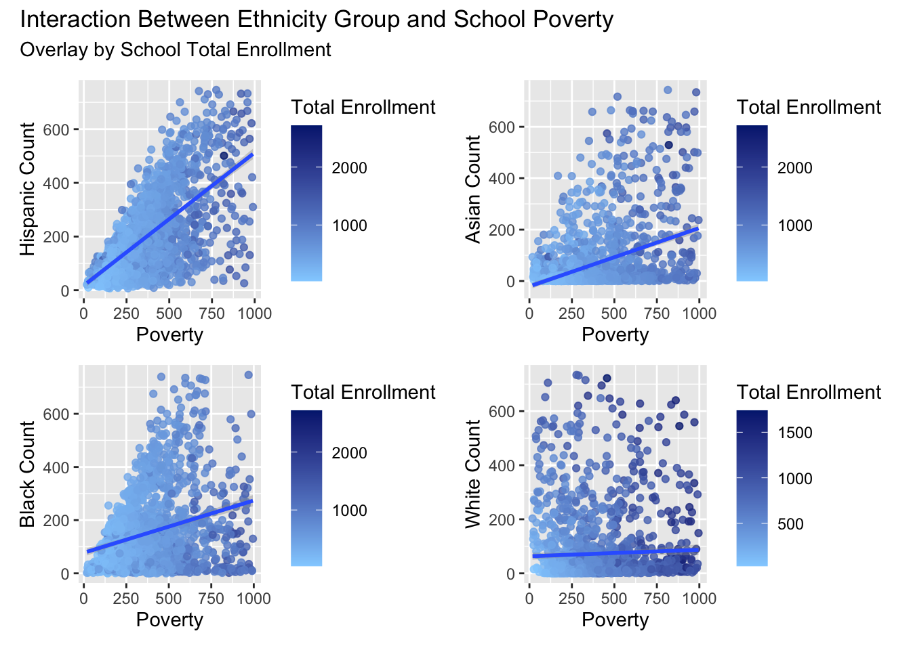
The result from scatter plots of ethic group breakdown supports our hypothesis. Apart from white students proportion, the sample of poverty and ethic group proportion are all positive correlated. Moreover, the slope steepness of positive correlation between poverty and proportion of Hispanic students is largest among four ethic groups, indicates that schools with higher proportion of Hispanic students are more likely to have higher poverty level.
5.4.3 Gender Composition and Poverty
Recall our assumption in chapter 2, we try to explore the relationship between school poverty level and gender composition. Based on social conventions, we want to know whether gender bias in education can also be reflected by observations in NYC public schools.

As we shown in poverty level before, most public schools in NYC have large quantity of students in poverty. However, though the poverty level is high, the average proportion of male students in NYC public schools are around 50%, which is a good sign indicating that there’s no bias when considering gender diversity and poverty level.